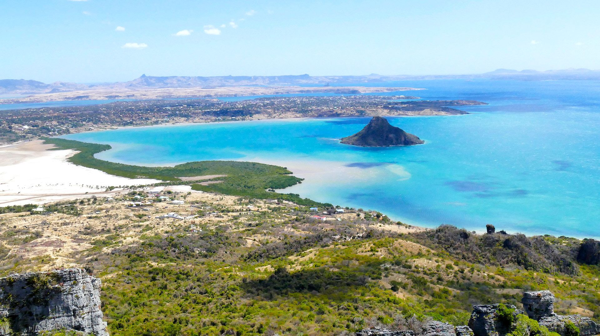
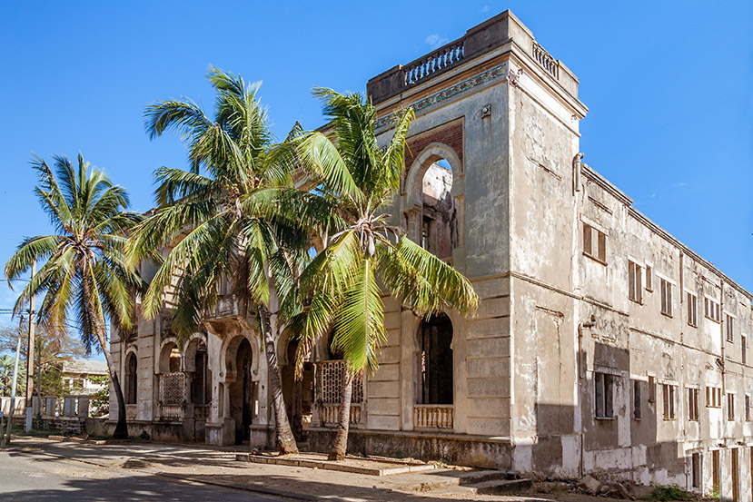

À propos

Diego-Suarez, ou Antsiranana, est une ville portuaire située au nord de Madagascar, chargée d'histoire et de légendes. Son nom vient des explorateurs portugais Diego Diaz et Fernando Suarez, qui ont visité la baie au XVIe siècle. La ville a été un carrefour stratégique pour les pirates, les commerçants et la France coloniale.
Services
Nous proposons divers services :
Galerie photo
🖼️ Visite de DS

C'est un endroit sacré et incontournable. Prendre une photo ici est comme une preuve d'avoir visité diego Suarez.

Cette ville a ete avant une base militaire , il y a encore des cestige de la colonisation , mais cette ville est compose de plusieur ethni qui y vive .

Vous avez remarque que Diego est entoure par la mer , et chaque cote est plus belle les uns que les autre

Avant , Madagascar est appelle ile verte par ca couverture de vert flonboiyant. les montagnes qui travers Diego , Ambilobe , Ambanja ,jusqu'a ... offere divers paysage naturelle epostouflant .

A Madagascar, il y a des animaux rare. voici celle de Diego
Contact
☎📞 Vous pouvez nous contacter par email : diegosuarez201@gmail.com
ou par téléphone : 032 27 199 92
Vous pouver aussi utiliser ce code QR :
PS les image ici present sont ete tire des autre site